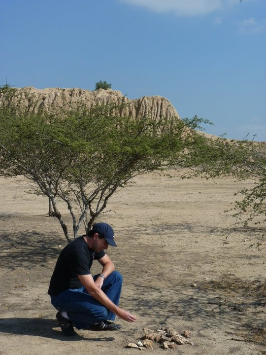

Julian M.
Fundador & CEO
Padre de familia, humanista, economista e investigador apasionado por la vida y la tecnología. Lidera Arandu Labs con la firme convicción de democratizar el acceso a las soluciones digitales útiles y honestas.
El Propósito detrás de Arandu Labs
Hay momentos en la vida en los que uno se detiene a observar el mundo que lo rodea y siente la profunda necesidad de tender un puente. Arandu Labs no nació de la fría ambición corporativa ni del deseo de conquistar mercados financieros; nació en el corazón de lo cotidiano, de la observación atenta de nuestras propias dificultades y de las de nuestros vecinos, amigos y familias.
Nació de la convicción de que la tecnología, si no es accesible, deja de ser una herramienta de progreso para convertirse en una nueva barrera de exclusión. Mi propósito al materializar este emprendimiento es simple pero profundamente transformador: poner al alcance de todos herramientas sencillas que resuelvan problemas reales, devolviéndole a la tecnología su sentido más humano y altruista.
La paradoja de la potencia olvidada
A menudo nos deslumbran con el último grito de la moda tecnológica, con inteligencias artificiales en la nube y dispositivos prohibitivos. Sin embargo, nos olvidamos de un milagro cotidiano que llevamos en el bolsillo. La potencia de procesamiento y la capacidad para resolver problemas que hoy residen en un teléfono celular de gama media —e incluso de gama baja— supera con creces la potencia disponible hace apenas unas décadas en las instalaciones científicas más avanzadas del planeta.
Es una verdad asombrosa: cada uno de nosotros camina con una supercomputadora en la mano. Por eso, la meta fundamental de nuestras aplicaciones no es obligar al usuario a mirar hacia afuera o a consumir más, sino hacer un uso máximo y eficiente de las herramientas que ya están instaladas en sus propios dispositivos. Nos propusimos el desafío de exprimir esa capacidad latente, de despertar el potencial dormido del móvil de cada persona para ponerlo a trabajar en su beneficio directo.
Inclusión digital masiva desde la empatía
La verdadera inclusión digital no consiste en digitalizar a las personas para que consuman servicios caros; consiste en democratizar las soluciones. Nuestra filosofía de desarrollo se basa en la articulación intuitiva de herramientas que, en muchos casos, son nativas de los equipos o tienen un coste cero para el usuario. Diseñamos pensando en la simplicidad, en que el logro de objetivos concretos no requiera un manual de instrucciones ni una billetera abultada, sino apenas unos toques en la pantalla.
Para lograr esto, hemos tenido que tomar decisiones firmes y, a veces, contracorriente:
- Renuncia a la vanguardia innecesaria: Decidimos, conscientemente, sacrificar el acceso a las herramientas de punta de la industria cuando sus altos costos no lo justifican.
- Filosofía de máximo costo-beneficio: Entendemos que el verdadero ingenio no está en resolver un problema gastando millones, sino en resolverlo de forma brillante con los recursos que ya tenemos a mano. Si una tecnología sofisticada encarece el producto sin cambiar la vida del usuario, preferimos la nobleza de lo simple y lo eficiente.
"El verdadero ingenio no está en resolver un problema gastando millones, sino en resolverlo de forma brillante con los recursos que ya tenemos a mano."
Un pacto de honestidad y sostenibilidad
Mantener los costes de desarrollo y mantenimiento al mínimo absoluto no es solo una estrategia de supervivencia; es un compromiso ético para con ustedes. Queremos generar el mayor valor posible manteniendo el menor impacto económico viable.
Para sostener este ecosistema y mantener accesibles nuestras herramientas de utilidad, estructuramos nuestras operaciones en torno a un modelo comercial de servicios de ingeniería de software a medida y consultoría tecnológica. Nuestra visión es que la división de servicios comerciales e integraciones corporativas sustente el desarrollo de utilidades libres para la comunidad.
En nuestras versiones gratuitas, integramos patrocinios mínimos y no intrusivos estrictamente necesarios para cubrir costes de infraestructura en la nube y servidores, asegurando que nuestro crecimiento se traduzca en mejores sistemas sin comprometer la privacidad del usuario.
Arandu Labs es, en última instancia, un proyecto de agradecimiento y de servicio. Es la materialización de la idea de que la ingeniería y la economía deben estar al servicio de la felicidad cotidiana. Les agradezco profundamente por abrirnos las puertas de sus dispositivos y de sus hogares. Nos comprometemos a seguir creando, cuidando siempre de su confianza, de su tiempo y de su bienestar.